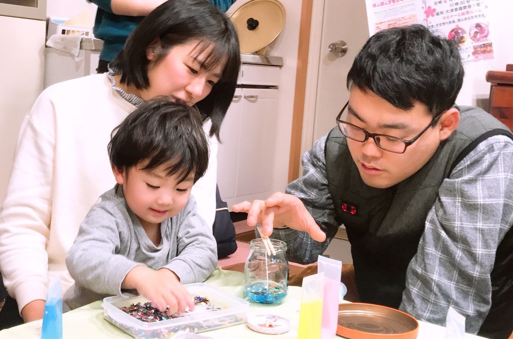

びわ湖わくわくプロジェクト

MISSION
琵琶湖清掃と家族の思い出作りを繋げた活動を通し、他団体とも連携を図りながら滋賀から笑顔を広げる。
ACTION
- 親子でSDGs目標14をサポートするため、自然を大切にする紙芝居後、湖岸清掃をしに行きます。清掃後、綺麗なシーグラス・貝殻を拾います。
- 親子でSDGs目標11をサポートするため、琵琶湖で拾ったシーグラス・貝殻を使って、親子で一緒に工作します。